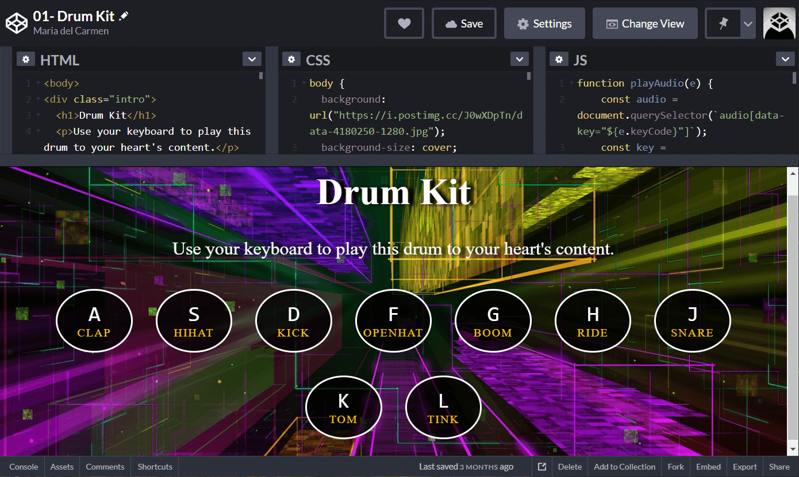

01-Drum Kit
01-Drum Kit
This is a JavaScript drum kit. When the user hits the corresponding key on their keyboard it is going to play the sound associated to it. A short animation will be triggered at the same time as well.

This is a JavaScript drum kit. When the user hits the corresponding key on their keyboard it is going to play the sound associated to it. A short animation will be triggered at the same time as well.
A clock that takes in the current time from JavaScript in order to update the hands on the face of the clock. Aside from tweaking the basic CSS, I changed the size of the hands and added the time on digital format (with a fix for the first nine minutes of every hour so that they always show in double digits [e.g. 16:02, not 16:2]).
For the image provided the user will be able to change the blur of said picture, and the spacing and base color of the frame around it. All of this will be done by updating the CSS variables using JavaScript so that the variables will update themselves even after compile time.
Dealing with the fundamentals of JavaScript by working with array methods. This includes filter(), map(), sort(), and reduce(). Some data is given before diving into 8 small challenges.
This is a flex gallery. It has 5 panels which, when clicked, will grow in size and show some additional words that will come from the top and the bottom of the page. Mainly done with CSS, though we still use JavaScript to listen to the click so as to trigger certain CSS classes.
A type ahead feature which uses a list of cities and states taken from a json file. When the user starts to type in the name, different suggestions will pop underneath the search box. The number on the right is the population of each city/state. This information is also provided by the same json file mentioned before.
Continuation of array cardio with new data provided at the beginning of the challenge. On this one we work with some(), every(), find() and findIndex(). Just like on part 1, you have to open up the console at the bottom of the screen.
An HTML5 Canvas that, as you click and then drag your finger along the trackpad it will draw on the screen whatever shaped you were doing. I did mine slightly different by making it a dark canvas, adding a shadowy blur to make it pop and by adding a clear button. For more information on the different thing you can change/add, take a look at the documentation.
Dev tools and console tricks. These include the regular console.log(), interpolated strings, styling, warning with console.warn(), error with console.error(), info messages with console.info(), testing with console.assert(), grouping together, counting counting with console.count(), timing with console.timing() and displaying information in table format with console.table().
A list where you can check off one item at a time or several at the same time by holding down the `shift` key and clicking the first and last item. This will automatically check off all the items in between.